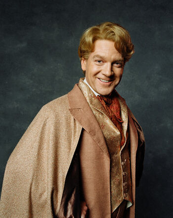

| "Fame’s a fickle friend, Harry... Celebrity is as celebrity does, remember that." —Lockhart's dubious advice to Harry Potter | |
|---|---|
Professor Gilderoy Lockhart, O.M. (Third Class), (b. 26 January,[1][2] 1964)[3] was a half-blood wizard, a Ravenclaw student at Hogwarts School of Witchcraft and Wizardry, and later a famous wizarding celebrity who authored many books on dark creatures and his supposed encounters with them.[1] Prior to his tenure as Professor of Defence Against the Dark Arts at Hogwarts School of Witchcraft and Wizardry during the 1992–1993 school year, he received many prestigious awards, such as Order of Merlin, Third Class; Honorary Member of the Dark Force Defence League; and five-time winner of Witch Weekly's Most Charming Smile Award.[5] He invented an Occamy egg yolk shampoo, which was too dangerous and expensive for open market; it subsequently became his dream to market these products.[14] His favourite colour was lilac.[5] Lockhart never actually did any of the heroic acts he claimed he had done, but instead used his considerable talent in Memory Charms to force the actual people who had done them into forgetting what they did. Ironically, Lockhart lost all of his memory on 29 May, 1993 due to a backfired Memory Charm cast by Ron Weasley's damaged wand.[15] Lockhart then became a permanent resident of St Mungo's Hospital for Magical Maladies and Injuries. He was institutionalised in the same ward as Neville Longbottom's parents, the Janus Thickey Ward for permanent spell damage.[13] Following his hospitalisation, he dictated his final book entitled Who Am I?.[16]
|
 |
| For More Information | |